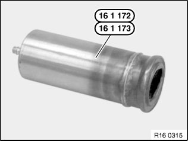

Fuel Filler Cap: Testing and Inspection
16 11 130 Checking Filler Cap Pressure Relief Valve
Special tools required:

Set pressure regulator on special tool 16 1 171 fully in "-" direction.
Connect special tool 16 1 171 using compressed air line (1) to workshop compressed air system (8 ... 10 bar).
Connect pressure sensor (2) from Diagnosis and Information System.

Connect special tool 16 1 172 to quick release coupling of special tool 16 1 171.
Install fuel filler cap on special tool 16 1 172 (3).

NOTE: Only the absolute pressure is indicated in the display of the Diagnosis and Information System (DIS). The current ambient air pressure is already displayed without additional pressurization.

Check testing equipment for leaks:
Select "Measurement/ Pressure" function on Diagnosis and Information System (DIS).
Using pressure regulator on special tool 16 1 171, increase pressure by 0.2 bar.
Using special tool 13 3 010 clamp off feed line from special tool 16 1 171.
Read off and note down pressure.
Wait 60 secs.
Read off pressure again and compare with starting pressure value.
Measurement evaluation:
Pressure drop > 0.012 bar
Testing equipment leaking.
Check connection points for leaks.
Check fuel filler cap pressure relief valve:
Select "Measurement/ Pressure" function on Diagnosis and Information System (DIS).
Using pressure regulator on special tool 16 1 171, increase pressure by 0.3 bar.
Using special tool 13 3 010 clamp off feed line from special tool 16 1 171.
Read off and note down pressure.
Wait 60 secs.
Read off pressure value again and compare with starting pressure value.
Measurement evaluation:
Pressure drop > 0.012 bar
Filler cap pressure relief valve faulty.
Replace fuel tank cap.